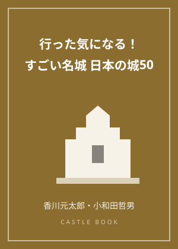

被害は96か所、額は約20億円――2026年熊本地震の熊本城、詳しい調査で全容が見えてきた

城と神社にまつわる新しい動きをお伝えするニュース記事です。出典はKKT熊本県民テレビ（2026年11月25日）です。熊本市は11月25日、7月の熊本地震による被害の試算額が約652億円と発表しました。これは10月までの集計で、8月に公表した額より約300億円増えています。内訳は製造業や宿泊業など商工関係が約302億円、医療・福祉施設が約107億円などで、文化財の被害額は約62億円。このうち熊本城の被害額は約20億円にのぼります。
熊本城の被害は96か所
同じ11月25日に開かれた熊本城の復旧に関する委員会で、熊本市は詳しい調査の結果、熊本城で96か所の被害があったと発表しました。崩落や膨らみなど石垣の被害が46か所、部材の破損や柱が傾くなど建造物の被害が14棟などとなっています。被災した石垣は当初40カ所と発表していましたが、詳細な調査で46カ所に修正されました。崩落や膨らみが生じるなどの被害は、石垣全体の約5パーセントに当たる約4000平方メートルに及びます。
被害額の内訳と、2016年の教訓
被害額の内訳は、石垣が16億円、建造物が2億円、旧細川刑部邸が2億円で、合わせて約20億円です。一方、2016年の熊本地震の後に復旧工事が完了した箇所では、今回の地震による大きな被害はみられなかったということです。10年前の地震からの熊本城の完全復旧は2052年度を予定していますが、今年の地震の影響があるかどうかは調査中としています。12月19日と20日には「心の復興事業」として、熊本城や熊本市動植物園など市内14施設が無料開放され、熊本城では360度VR体験などのイベントも行われます。
検定の学習ポイント
検定の学習ポイントは、石垣の被害の見方です。石垣の被害には、石が崩れ落ちる「崩落」と、石垣が外側に膨らむ「はらみ」があります。今回の調査では、崩落や膨らみのある石垣が46か所確認されました。2016年の地震後に復旧工事が完了した箇所で大きな被害がなかったことは、石垣の復旧工事が次の地震への備えにもなっていることを示しています。関連記事「江戸時代の礎石の列が姿を現す――熊本城・宇土櫓、石垣の上から約30個の石材を発見」もあわせてどうぞ。
熊本城の無料開放は2026年12月19日・20日です。復旧の歩みが続く熊本城を、実際に訪れて確かめてみてはいかがでしょうか。
天守つるぎから一言：96か所という数字は大きいけれど、復旧が終わった場所は今回の地震に耐えたんだね。石垣の復旧が、城を守る力になっていることが分かるよ。
城と神社のニュースや検定の情報は、公式SNSでもお知らせしています。InstagramとThreadsの @tabi.kentei をフォローして、最新情報をチェックしてください。
この記事のおすすめ本

表紙イメージ（実際の表紙とは異なります）
PR ガイド・スタンプ帳
日本100名城と続日本100名城に行こう 公式スタンプ帳つき
著者：公益財団法人 日本城郭協会
100名城と続100名城、あわせて200城を一冊に収録した合本版。すでに100名城を巡り始めた人が、続編までまとめて持ち歩きたいときに便利です。
Amazonで見る価格はAmazonでご確認ください／リンク先：Amazon.co.jp

表紙イメージ（実際の表紙とは異なります）
PR ビジュアルガイド
行った気になる！すごい名城 日本の城50
著者：香川元太郎・小和田哲男
日本各地から50の名城を、大迫力の写真と精密イラストで解説。次の城めぐりの行き先選びにも、自宅で眺めて楽しむ画報としても使えます。
Amazonで見るKindle版あり／価格はAmazonでご確認ください／リンク先：Amazon.co.jp

表紙イメージ（実際の表紙とは異なります）
PR 読み物
城好き気象予報士とめぐる名城37 天気が変えた戦国・近世の城
著者：久保井朝美
気象予報士の視点で37の名城をめぐる一冊。天気や気候が築城や戦にどう影響したかという切り口が新鮮で、城を見る目が変わります。
Amazonで見る価格はAmazonでご確認ください／リンク先：Amazon.co.jp
当サイトは、Amazon.co.jpを宣伝しリンクすることによってサイトが紹介料を獲得できる手段を提供することを目的に設定されたアフィリエイトプログラムである、Amazonアソシエイト・プログラムの参加者です。価格・在庫はリンク先でご確認ください。